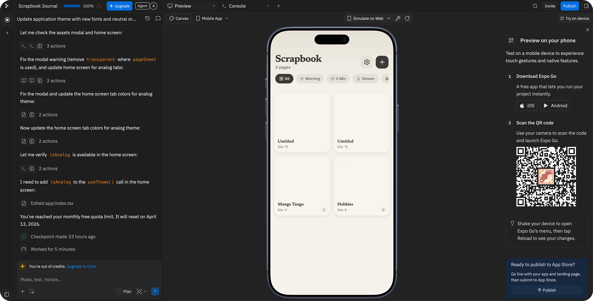
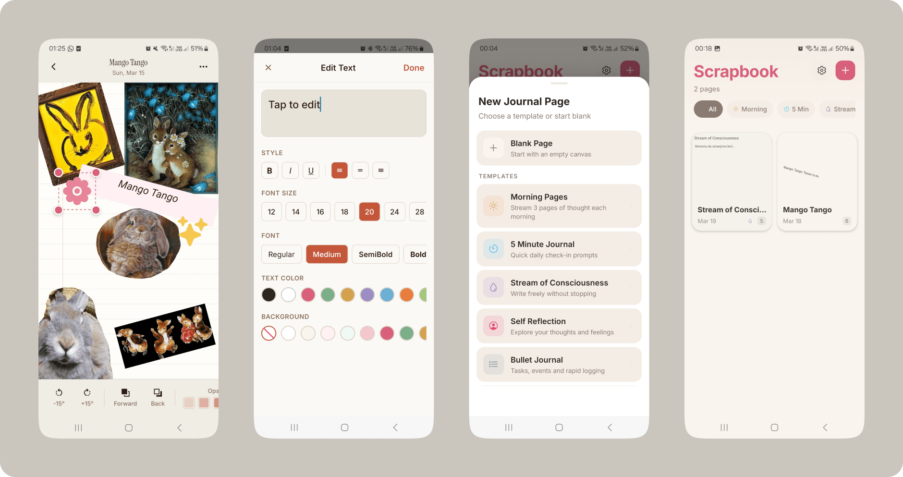
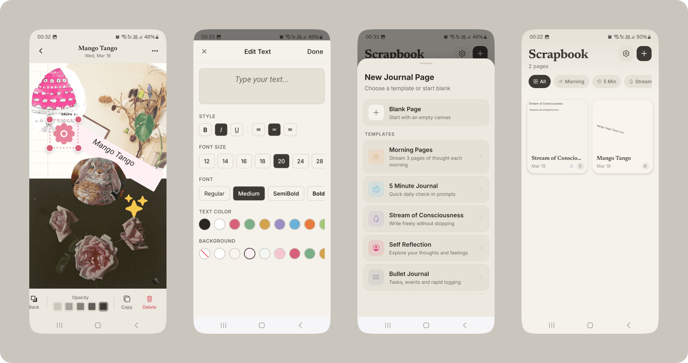

Why is nobody talking about Replit Agent?
This is some light writing in the realm of testing differnt tools as a Product Designer. I remember Replit when it was a casual Java Script learnig tool. It would check my little piece of code and return a text that should help in understanding the issue, trying again and hopefully getting it right. BUT Replit has come a very long way from a learning tool to a very good vibe-coding tool.
I did just a tiny test. Replit and I worked on making a Scrapbook Journaling app.
Next up, I would like to task Replit with something more substaintial, like exploring some more realistic scenarios while buidling LLM-powered sofware, at work with other people.

Bellow we see the result just after the 3rd prompt. Obviously, we see some issues with the UI in terms of consistance of useage regarding text, color, style overall. Replit did not have a Figma File attached to it, purpusefully. Deffinetly would like to connect the design system file in the next test and in the test after that also add high-fidelity prototyped areas where it is really struggling to create what was defined in the prompt.


I will continue testing and writing my lines here. But we finish this little sneak peek here, of my first Replit testing phase. After just 4th prompt.
We managed to get so much out out of just 4 prompts. We can see all out Pages, use templates, create from Blank. Change from light to dark theme as well as pick between analog and digital UI.
I was particularly happy with in Canvas features which covered Text Editing, Object Rotation, Stickers, Assets Library and Surface settings.
Oh, I should connect my Github repository but it is 2.08AM.
For a little while it seems that we will be playing the pricing game until we collectively lean towards to one or two top ones in terms of usefulness and $.